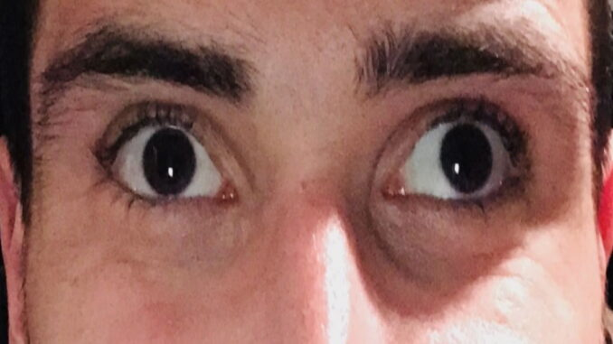

Strabism; complicații și efecte sociale
Strabismul este o afecțiune oculară în care ochii nu sunt aliniați corespunzător și nu se uită în aceeași direcție. Această condiție poate avea diverse implicații, care pot afecta vederea și pot provoca deficite de dezvoltare și de funcționare a analizatorului vizual. Dacă în urmă cu nu foarte mulți ani, copiii afectați de strabism păreau condamnați la excluziune socială, astăzi situația stă cu totul altfel.
Odată cu dezvoltarea tehnicii medicale și a difuzării de informații pe internet, ar trebui să fie de netolerat ca un copil să nu aibă șansa de a fi vindecat de strabism. Prezentarea la medicul oftalmolog încă de la o vârstă fragedă crește semnificativ șansele de corecție a strabismului.
Vindecarea strabismului. Unde și cum alegeți un medic
Iată câteva implicații asociate strabismului
Ambliopia (ochiul leneș)
Strabismul poate duce la dezvoltarea ambliopiei, o afecțiune în care analizatorul vizual nu se dezvoltă corespunzător și acuitatea vizuală este diminuată în diverse grade. Dacă strabismul nu este tratat în copilărie, creierul poate ignora semnalele provenite din ochiul afectat, ducând la scăderea definitivă, uneori severă, a vederii. Vârsta cea mai potrivită pentru tratarea eficace a ambliopiei este cea preșcolară (3-5 ani), de aceea fiecare copil ar trebui să facă un control oftalmologic de rutină în jurul vârstei de 3 ani.
Diplopie (vedere dublă)
Persoanele cu strabism pot experimenta diplopie, adică vedere dublă. Aceasta se produce atunci când ochii nu sunt aliniați corespunzător și văd imagini separate pentru fiecare ochi. Creierul încearcă să suprime una dintre imaginile pentru a evita confuzia și diplopia (neutralizare), dar acest lucru poate avea implicații negative pe termen lung.
Dificultăți de percepție a adâncimii
Strabismul poate afecta capacitatea de a aprecia perspectiva și distanțele în mod corespunzător. Aceasta se datorează alterării vederii binoculare și a stereoscopiei, ceea ce poate afecta abilitatea de a evalua corect distanțele și de a judeca poziția relativă a obiectelor în spațiu.
Stigmatizare socială și impact emoțional
Persoanele cu strabism pot fi supuse stigmatizării și pot întâmpina dificultăți în interacțiunile sociale. Aspectul fizic al ochilor poate provoca anxietate, lipsă de încredere în sine și probleme de recunoaștere a expresiilor faciale.
Dificultăți de învățare și performanță școlară
Strabismul netratat în copilărie poate afecta performanța școlară. Copiii cu strabism pot avea dificultăți în a se concentra, pot avea o capacitate de concentrare redusă și pot prezenta probleme în deprinderea abilităților motorii fine.
Disconfort și oboseală oculară
Strabismul poate provoca oboseală oculară și disconfort, deoarece ochii trebuie să depună un efort suplimentar pentru a se concentra și a compensa devierea. Aceasta poate duce la ceflee (dureri de cap), vedere încețoșată și oboseală rapidă în timpul activităților care necesită concentrare vizuală.
Importanța consultului la un oftalmolog – specialist în strabism este evidentă. Doar acesta poate formula pentru un diagnostic corect și un plan de tratament adecvat cu privire la strabismul copilului. Diagnosticarea cât mai timpurie oferă șanse reale pentru tratamentul (medical sau chirurgical) al acestei afecțiuni.
Citește și…